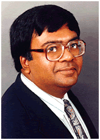

CSWIM 2011 Keynote 1
Robert J. Kauffman is currently a Visiting Professor
IS and Strategy at Singapore Management University’s
School of Information Systems, and Lee Kong Chian School
of Business. He also is Associate Director of the Living
Analytics Research Center, which is being jointly
developed between SMU and Carnegie Mellon University. He
also is a Distinguished Visiting Fellow associated with
the Glassmeyer-McNamee Center for Digital Strategies at
the Tuck School of Business, Dartmouth College. He
previously served as the W.P. Carey Chair in IS at
Arizona State University’s W.P. Carey School of
Business, and as a Professor and Chair of Information
and Decision Science, and Center Director of the MIS
Research Center at the Carlson School of Management,
University of Minnesota. He has also been a Visiting
Associate Professor at the University of Rochester, a
Visiting Scholar at the Federal Reserve Bank of
Philadelphia, and an Assistant and Associate Professor
at the Stern School of Business at New York University.
He worked in international banking and finance on Wall
Street in New York City, and is a past graduate of the
University of Colorado, Boulder (B.A.), Cornell
University (M.A.) and Carnegie Mellon University (M.S.,
Ph.D.). His research focuses on senior management issues
that span the economics of IS, competitive strategy and
technology, IT value, strategic pricing and consumer
behavior, e-commerce, risk management, and supply chain
management. He blends theory development and modeling
with empirical methods and data collection in a variety
of industry settings, including air travel, financial
services, telecommunications, hospitality, and
e-commerce. He has published more than 100 articles in
refereed journals, and has won numerous awards for his
innovative research, academic service, and graduate
student advising. He has served in a variety of
editorial positions and conference leadership roles, and
will co-chair the ICIS Doctoral Consortium in Shanghai
in 2011, and the International Conference on Electronic
Commerce in Singapore in 2012. His current research
papers are forthcoming in 2011 and 2012 at the Review of
Economics and Statistics, Information Systems Research,
the Journal of Management Information Systems, Decision
Support Systems, the Journal of Information Systems,
Electronic Commerce Research and Applications, and
Information Technology and Management.
Who Will ‘Bell the Cat’? IT,
Channel Conflicts, Transparency and the Theory of
Strategic Decommoditization
The Internet has been described as the ultimate channel
for one-on-one customization and consumer-focused
hyperdifferentiation, suggesting that innovative sellers
and suppliers should be able to reap high profits.
Senior managers of firms in the e-business marketplace
are increasingly concerned that the digital
intermediaries that sell their products and services
have become too powerful though. One development is that
sellers and suppliers are paying ever-higher tolls to
aggressive intermediaries. These middlemen are “putting
the squeeze” on supplier profits. Another is that firms
are losing ownership of their customers to highly
successful intermediaries. A third is that the firms are
less able to project the benefits of their investments
in product and service innovation and differentiation.
Instead, the intermediaries are “commoditizing” their
products. Commoditization occurs when the channel
through which a supplier sells reduces its capability to
differentiate its products and services. We have seen
this, for example, in the air travel, hospitality, and
IT services industry in the presence of online travel
agencies (e.g., Orbitz, Expedia) and IT services
e-markets. The digital intermediaries have forced the
competition to emphasize prices for relatively standard
product and service bundles – something that sellers and
suppliers believe weakens their ability to customize
their offerings, serve their customers well by providing
product feature transparency, and achieve high
profitability. In this presentation, I will discuss
recent developments in several industries in which these
kinds of channel conflicts have been especially severe,
and will how firms are repositioning themselves to fight
back against the intermediaries. To do this, I will
leverage an analogy from a medieval European story
called “The Bell and the Cat” in order to explain why
the new “theory of strategic decommoditization” is
useful to interpret and predict what we see happening IT
and e-business world around us.
CSWIM 2011 Keynote 2

Varghese S. Jacob is Senior Associate
Dean and Ashbel Smith Professor of Management Science
and Information Systems in the School of Management at
the University of Texas at Dallas (UTD).
Prior to joining UTD he was Associate Professor of
Management Information Systems and Director of the
Center for Information Technologies in Management in the
College of Business at The Ohio State University.
He obtained his Ph.D. degree in Management, majoring in
Management Information Systems, from
Purdue
University. His research
interests are in the areas of Artificial Intelligence,
Data Quality, Decision Support Systems, and Electronic
Commerce.
His publications include articles in
Management
Science,
Information Systems Research, Journal of Management
Information Systems, Decision Support Systems, IEEE
Transactions on Systems, Man, and Cybernetics, European
Journal of Operational Research, Psychometrika, Group
Decision and Negotiation and
International
Journal of Man-Machine Studies.
He is co-editor-in chief of the journal
Information
Technology and Management and serves as an Associate
Editor for
Decision Support Systems. He also serves on the
editorial board of
Information
Systems Frontiers: A Journal of Research and Innovation.
He is a member of The Institute for Operations Research
and the Management Sciences (INFORMS), IEEE Computer
Society, Association of Computing Machinery (ACM). He
has served as the Chair of the INFORMS Information
Systems Society.
MIS research over the Years –
Rolling Stone or Leading Edge
To the outsider, MIS research may seem somewhat akin to
a rolling stone that gathers no moss, i.e. there may be
a perception that there is no depth to the research and
the work seems fleeting.
Of course we would argue that information
technology keeps changing at a rapid pace and this
naturally would influence the work we do.
The talk seeks to answer the question whether we
can come up with a context or framework in which to
consider MIS research.
In this context, I believe, MIS research can be
viewed as leading edge as opposed to the flavor of the
month.
|